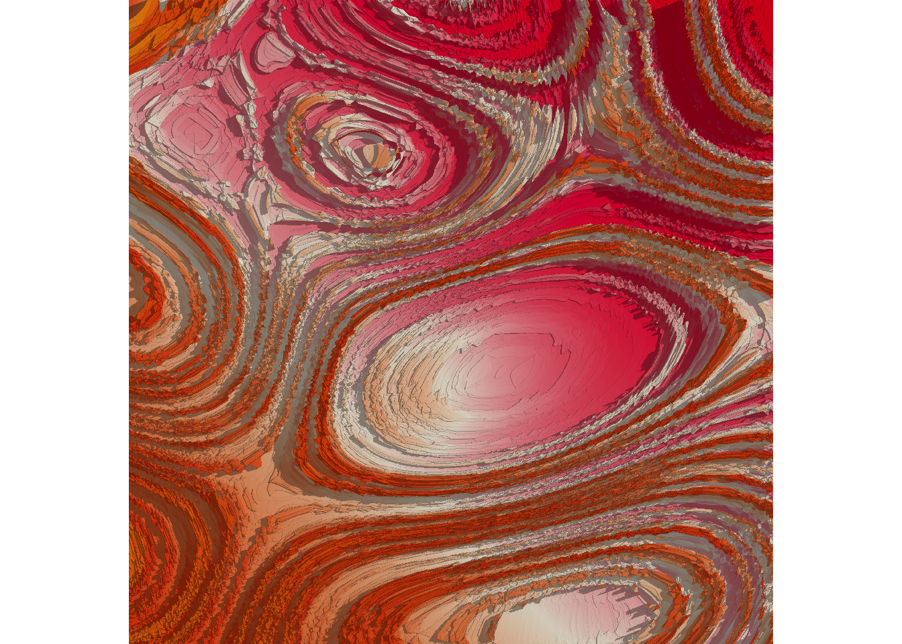

This lab was mostly for fun, and I mostly treated it as a creative writing assignment (I am a philosophy minor, after all!). But, this really did teach me a lot. I really liked the reading that went along with it, Art From Code with Danielle Navarro. It was incredibly interesting to read through her functions and seeing how it affected the final piece.
The Iris is a tribute and transcendence. A data-born organism that blossoms with statistical soul. Forged from the humble R iris dataset, an archive of petal lengths and sepal widths, this piece spirals into abstraction, where color and curve take the place of taxonomy. In rich violets and ethereal lavenders, the form evokes the layered petals of its namesake flower. Yet from its digital stamen bursts a constellation of golden nodes. Not pollen, but precision. Each dot a data point, each arc a trace of algorithmic elegance. The composition suggests motion, intention, and growth, as if the very act of classification were blooming into consciousness. Neither purely natural nor wholly synthetic, The Iris exists at the intersection of art and analysis. It does not ask to be interpreted. It demands to be experienced. For in its radiant whorl lies the revelation that even from the smallest measurement, something luminous can unfold.
The Iris was created using the iris dataset in R, but instead of focusing on traditional analysis, the code transforms statistical summaries into abstract, floral forms. Large, layered violins represent the distributions of sepal and petal measurements, drawn with a size of 25 to emphasize their abstract, petal-like shapes over actual precision and data visualizations. Mapping colors to species adds visual contrast and variety, using soft purples and deep violets to make the the plot more remniscent of an iris. A bright orange loess line curves through the center, offering a sense of direction or movement through the swirling patterns. Yellow jittered points scatter like pollen across the petals, showing individual data points and adding a sense of randomness and life. The use of coord_polar() transforms the rectangular plot into a circular composition, making it resemble an iris in bloom. With axes removed and colors carefully chosen, the image becomes less about numbers and more about organic symmetry, turning data into something unexpectedly delicate and expressive.
#Function that produces coordinates that get put into other noise processestransform_to_curl_space <-function(x, y, frequency =1, octaves =10) {curl_noise(generator = fracture,noise = gen_simplex,fractal = fbm,octaves = octaves,frequency = frequency,x = x,y = y )}
#Create cellsdefine_worley_cells <-function(x, y, frequency =3, octaves =6) {fracture(noise = gen_worley,fractal = billow,octaves = octaves,frequency = frequency,value ="cell",x = x,y = y ) |>rank() |>normalise()}
#Create noisesimplex_noise <-function(x, y, frequency = .1, octaves =10) {fracture(noise = gen_simplex,fractal = ridged,octaves = octaves,frequency = frequency,x = x,y = y ) |>normalise()}
ice_floe <-function(seed) {set.seed(seed) grid <-long_grid(x =seq(0, 1, length.out =2000), y =seq(0, 1, length.out =2000) ) coords <-transform_to_curl_space(grid$x, grid$y) grid |>mutate(cells =define_worley_cells(coords$x, coords$y, frequency =8, octaves =17), #Set frequency to 8, octaves to 17paint =simplex_noise(x + cells, y + cells, frequency =0.2), #Set frequency to 0.2paint =normalise(paint) ) |>as.array(value = paint)}
shaded_ice_floe <-function(seed) { art <-ice_floe(seed)height_shade(heightmap = art,texture =sample_canva2(seed =600, n =800) #Made it pink ) |>add_shadow(shadowmap =ray_shade(heightmap = art, sunaltitude =40, #Make the sun a little furthersunangle =70,multicore =TRUE, zscale = .005 ), max_darken = .3#I want it pretty light ) |>plot_map()}shaded_ice_floe(11032003)

In Geode of a Dying Star, the viewer is thrust into the violent stillness of cosmic decay. Where time folds in on itself and color is memory made visible. The concentric ruptures, seething in molten crimsons and collapsing oranges, evoke the final breath of a celestial body imploding under the weight of its own grandeur. This is not a landscape. It is a wound in spacetime. Each striation whispers of pressure long endured, of centuries pressed into silence. The work refuses serenity. It demands awe. It is a relic of a universe unraveling and reassembling itself through sheer, incandescent will. Scholars have debated whether this piece is a warning, a lament, or a hymn. Most agree on only one thing: it humbles the gaze.
Geode of a Dying Star is a generative piece built from layers of mathematical noise and texture. The number 11032003, my birthday, is used as the master seed that governs the random generation of the entire piece. The structure begins with a 2000x2000 grid of points. Each point is pushed into a swirling pattern using a function called transform_to_curl_space(), which applies fractal noise to bend space into organic currents. Over this, Worley noise is used to form cell-like, cracked textures. It’s layered at a high frequency (8) and with many octaves (17). This creates sharp boundaries that mimic shattered surfaces. Color is painted on using simplex noise, shifted slightly by the Worley texture itself, giving the piece a sense of dynamic layering. The frequency is set to 0.2 to avoid overly fine grain, maintaining a soft, molten quality. To color the surface, the code samples from a randomly selected Canva palette using a fixed seed (600), then stretches that palette into 800 distinct tones. The seed was deliberately chosen to fill the picture with hues of soft pink, coral, and orange. Once shaped and colored, the picture is transformed into a heightmap. Shadows are added using simulated sunlight at a low angle (sun altitude of 40) and gentle intensity (max darken 0.3), casting soft ridges across the surface.